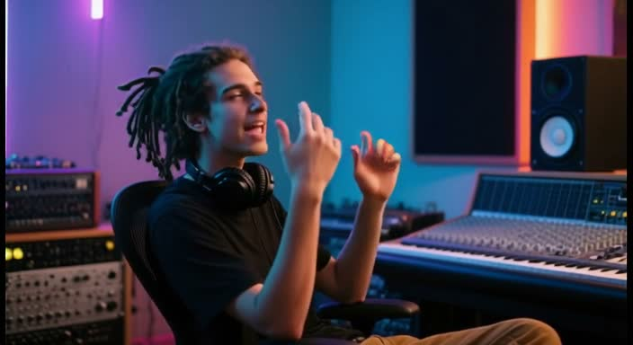
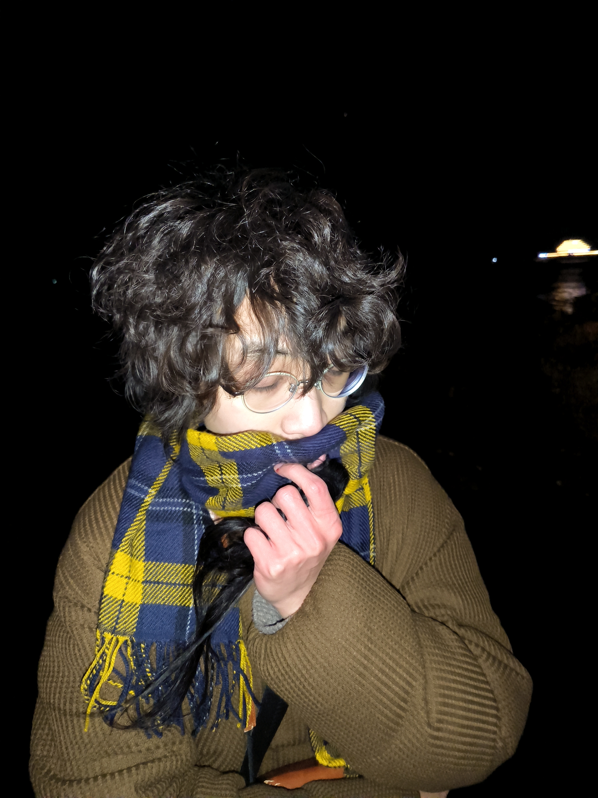
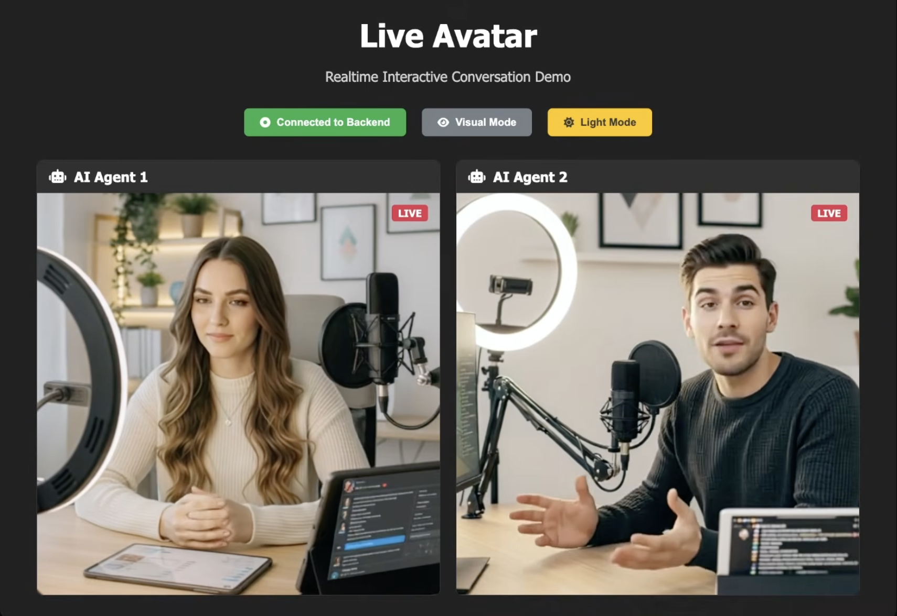
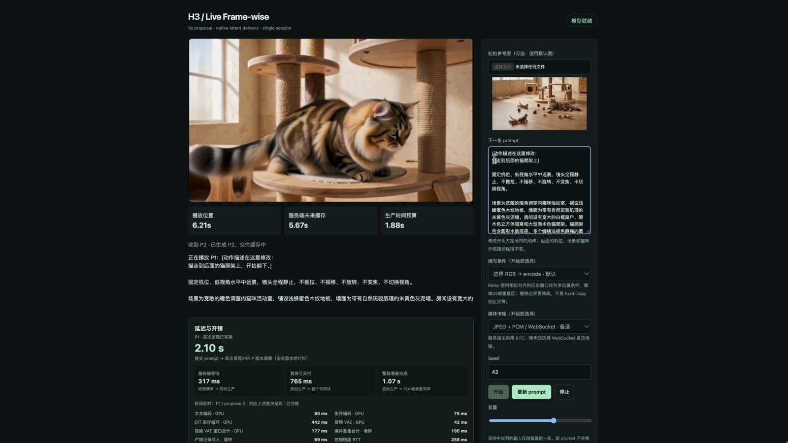
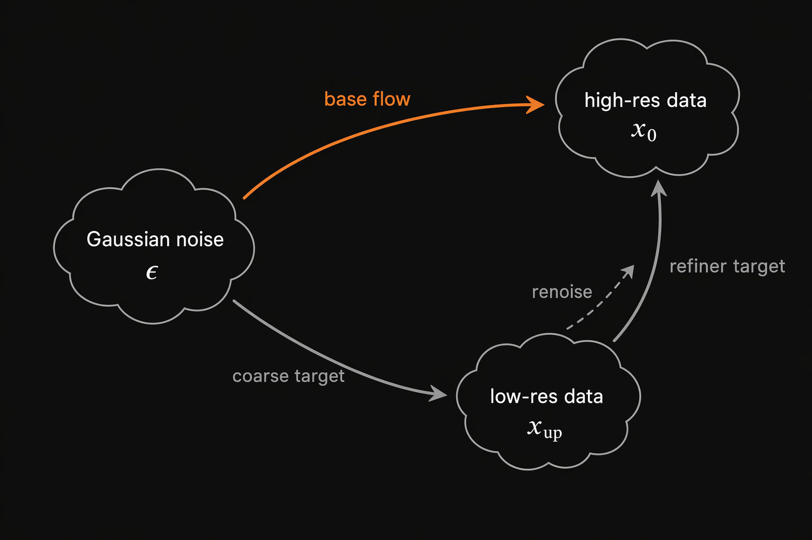
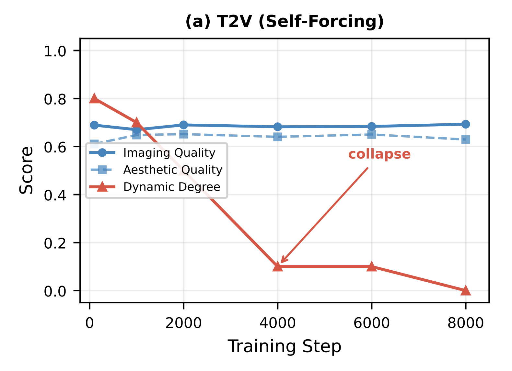
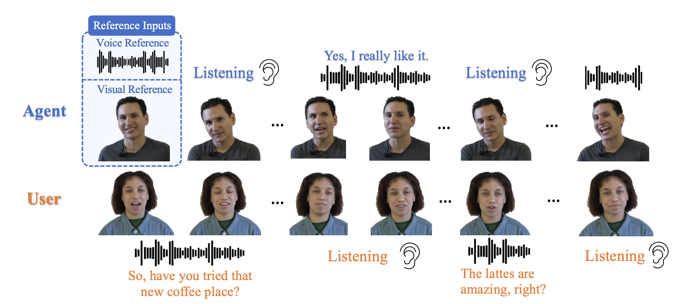
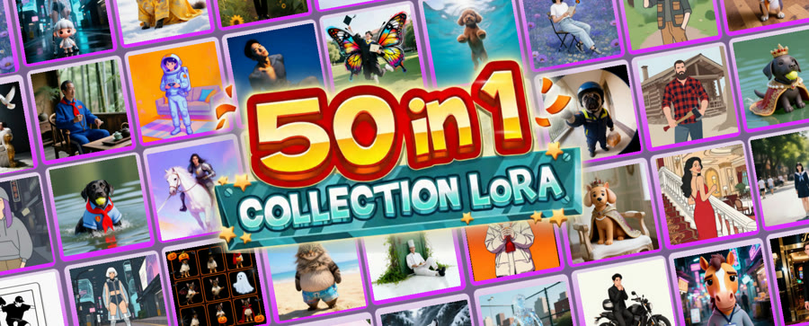
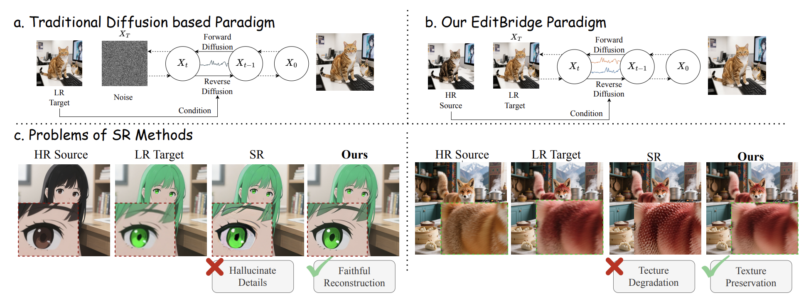
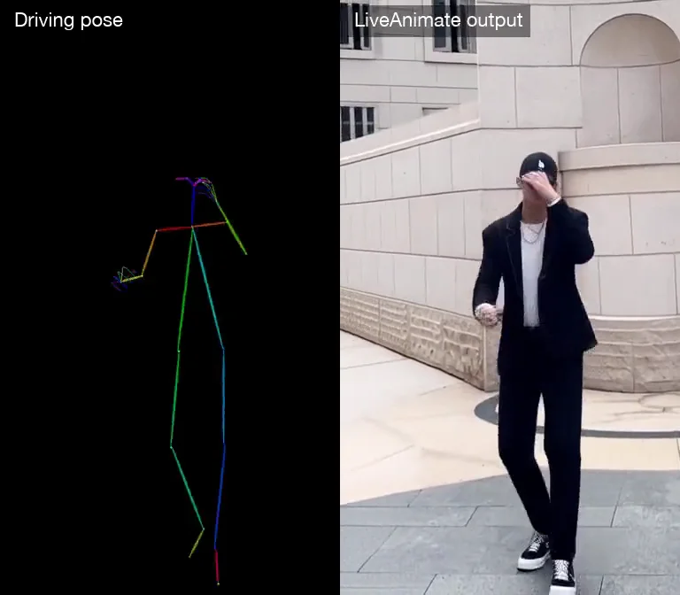

VIDEO GENERATION · WORLD MODELS
Yubo Huang.
I work on making video generation
interactive, continuous, and efficient.

I am a master’s student at the University of Science and Technology of China (USTC), advised by Prof. Enhong Chen at the State Key Laboratory of Cognitive Intelligence. I am currently a research intern on Tencent’s Game World Model Team.
I graduate in summer 2027 and am seeking job opportunities.
Research interests
My current focus is interactive video generation for world models and interactive games. In the longer term, I want to unlock emergent capabilities from native long-video training through compact visual representations and better training infrastructure.
Streaming generationDiffusion distillationEfficient training & inference
01
Selected projects

REAL-TIME STREAMING AVATARS
LiveAvatar
Give “Her” a body.
Explore LiveAvatar
INTERACTIVE VIDEO GENERATION
Commit-One
Make bidirectional video models interactive.
Explore project
EFFICIENT VIDEO SAMPLING
Diffusion Autoencoder
Accelerate video generation with diffusion-native LOD.
Explore DAE02
Selected publications
* Equal contribution.

DynaForcing: Overcoming Dynamic Collapse in Self-Forcing Distillation for Streaming Avatar Generation

OmniPersona: Persona-Embodied Agents for Multimodal Conversation Interaction



03
Experience
Tencent
Jul. 2026 — PresentGame World Model Team · Qingyun Program
I work on continued training and streaming post-training for an interactive video generation project.
Advisors: Dr. Jiaming Liu & Dr. Jingwei Huang
Anuttacon
Jan. 2026 — Jul. 2026LPM Team
I explored token compression to speed up LPM1.0 sampling, as a direction complementary to step distillation. I proposed cross-compression-ratio trajectory distillation, achieving 5.3× per-step and 1.8× end-to-end acceleration.
Advisors: Dr. Ailing Zeng & Dr. Xin Tong
Alibaba
Aug. 2025 — Jan. 2026Z-Image Team
I worked on the core R&D of LiveAvatar—model training, inference optimization, audio-video data pipelines, post-training, and the streaming-distillation framework. I also helped bring it to Qwen’s consumer-facing interactive-video product.
Advisors: Dr. Jiaming Liu & Prof. Steven Hoi